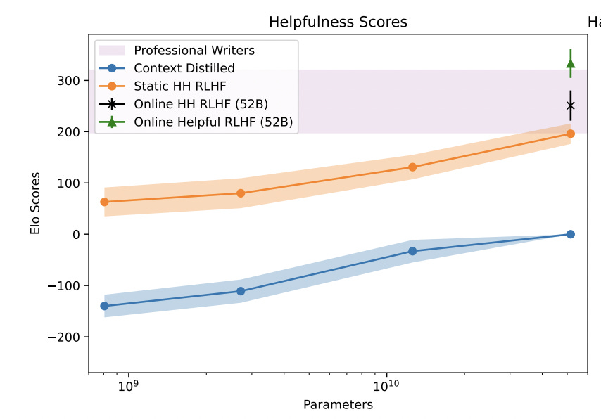
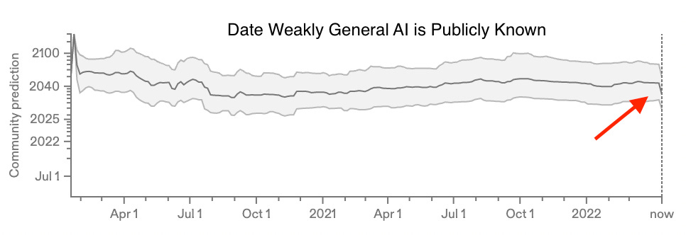
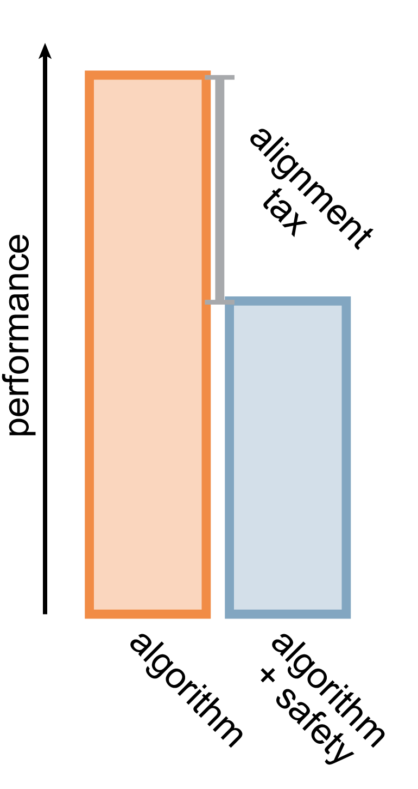
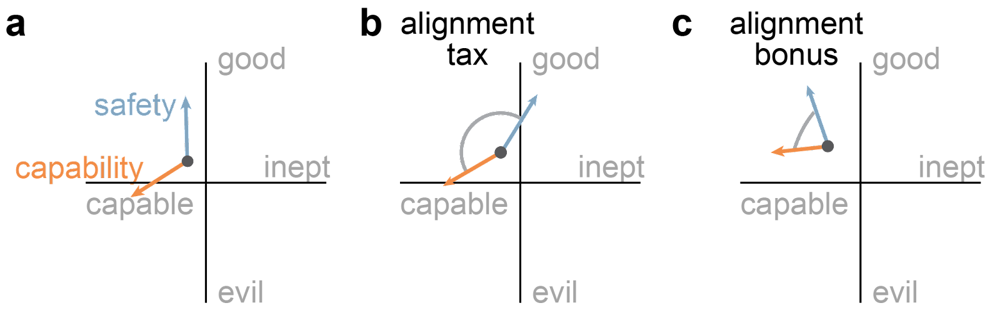
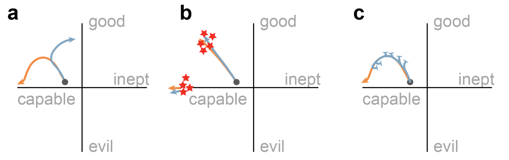

Pop Culture Alignment Research and TaxesTL;DR A quick recap of all the AI progress published recently, a shortcoming of the alignment tax definition, and a dynamical systems model of AI… |
Updated | ||
|---|---|---|---|
| Author | Jan Kirchner | ||
Previously in this series:Cognitive Biases in Large Language Models, Drug addicts and deceptively aligned agents - a comparative analysis, Inferring utility functions from locally non-transitive preferences.
It’s been a couple of exciting weeks.
Google DeepMind published a paper showing we’ve been training our language models in a suboptimal way. Their new model (continuing the rodent-themed naming scheme), Chinchilla, fixes that issue and manages to compete with/beat the much larger Gopher.
Google Brain didn’t get that message in time (also not the message about the rodent-themed naming scheme)[1] and published a paper where they train a model that’s even larger than Gopher, but with the old, suboptimal training scheme. That model can now solve logic puzzles that I could not solve in a thousand years[2].
[1]
I like “Giant Hutia” or “New York Pizza Rat”.
[2]
The new kid on the block, Anthropic, is not dragging its feet
and published a paper
where they show that reinforcement learning from human values meshes
well with their “Helpful, Harmless, and Honest” approach[3].
This paper contains the first plot I’ve seen with a language model
score better than a human expert on a relevant metric[4]
- but that doesn’t mean it didn’t happen before. I don’t pay super
close attention to the metrics.
[3]
They leave out “honest” because it’s really hard to evaluate for non-expert humans.
[4]

Finally, OpenAI published a paper where they trained a new type of text-to-image model based on their previously released CLIP. The result is… mind-blowing, to the point where people on Twitter announce the end of traditional visual art forms[5].
[5]
That’s Twitter, though. An artsy friend of mine is now considering changing career tracks to go into “AI art”, something that wasn’t really on the menu a few weeks ago.
Through a series of wacky coincidences (TBA), yours truly got access to the beta version of OpenAI’s new image generation technology and has been updating the thumbnails of his Substack (see here for a disclosure).
Three images created by me with OpenAI’s DALL-E 2. The prompts are: “A painting of Leonardo Da Vinci holding a slice of pizza.”, “A painting of a chinchilla and a gopher dancing.”, “A painting of a painting of a painting of a painting.”
Not coincidentally, one of the founding figures of AI Safety published an April Fool’s post announcing that their new strategy is just giving up, accompanied by a fair amount of despair in the community. More moderate voices are willing to bet money that AI doom is not imminent and that we still have at least ten years[6]. Prediction markets havereacted to the news by decreasing median timelines by 5 to 10 years but still placing it 10 to 20 years in the future. Notably, this is less than the typical 30 years implied by Platt’s law, but these estimates are notoriously hard to interpret[7].
[6]
To those not familiar with this type of talk, yeah, ten years is still a lot shorter than what the median person on the street or even some experts would guess. I don’t have robust reasoning for how different “timelines” should affect what I do on a day-to-day basis, so I tend not to think about the question too much.
[7]
There has been an influx of new people on those questions in the last two weeks for the prediction markets. It’s probably fair to assume that those are not experts (who would have thought about the question even before the new wave of papers) but people who decided to participate because of the papers. And beyond prediction markets, there’s this ongoing discussion about whether forecasting AI is possible.
From source. Note that the y-axis is logarithmic.
In my experience, the best strategy in response to a big, exciting thing is to ignore it. Enough smart people will already be thinking about the topic, and all the important details will reach you through social osmosis[8] in due time.
[8]
Or, let’s be honest, LessWrong.
Consequently, I focus on the B-story that develops parallel to all the exciting rush. I look at whether there currently is any alignment tax, whether the alignment tax might be negative (temporarily), and how we might expect the alignment tax to change.
Let’s recap one line of argument for what we might expect advanced AI to look like:
In the early days when people started to think about advanced AI, there was a pretty even divide on whether an advanced AI will tend to be friendly or unfriendly “by default”[9]. With this debate as a backdrop, Nick Bostrom posited his Orthogonality thesis in 2012:
[9]
i.e. if we don’t put a lot of work into pushing in one direction or the other.
Intelligence and final goals are orthogonal axes along which possible agents can freely vary.
The orthogonality thesis is an idea we are very familiar with from pop culture. Fictional characters can be heroes or villains, and they can be capable or inept. Have a look at this alignment chart that took me way too long to make:
I don’t know what half of these characters do, but I hope I placed them approximately right. Please have extensive discussions about this chart in the comments.
None of these characters are real, and arguments from fictional evidence shouldn’t convince anyone. But we don’t have to search long to find real examples of very capable evil (factory farming, drug cartels, or Wall Street psychopaths) or very inept good (petition to end poverty, plastic straw bans, or sweaters for kittens).
The category “capable neutral”, however, is the weirdest one. Surprisingly, it contains some striking examples from advanced AI systems:
The YouTube recommendation algorithm used to be only really good at presenting people with content they wanted to watch. As a negative byproduct, they contributed to polarization and misinformation.
The Microsoft chatbot Tay used to be only really good at learning from what people tweeted at it. It quickly became very ugly.
The Amazon hiring software used to be only really good at predicting resume scores based on previously observed and evaluated resumes. It took way too long until they realized it also incorporated a pretty bad bias against female applicants.
Note that none of these cases resemble “The Joker” - these systems did not have the explicit goal of harming someone or causing chaos. The bad effects I list are only side -effects of the thing the system is designed to do.
Systems in the “neutral” or “evil” row are calledunaligned or misaligned, and the problem of pushing them more into the top row is called The Alignment Problem. Some people argue that solving the alignment problem could be one of the most important challenges. Such claims are made about different things all the time. But when we see how our AI systems are getting exponentially more capable, we can imagine that problems like those with the YouTube recommendation algorithm, Tay AI, and the Amazon hiring software might also grow exponentially in severity. And the same way that more capable AI systems exhibit qualitatively new capabilities, there is also the possibility that we will encounter qualitatively new problems.
We might want to be very careful when designing a new system to avoid these problems. We might want to run many tests before deployment and build the system to steer it away from bad failure modes. (Or perhaps we could “just” decide not to develop the system in the first place.)
All of these proposals come with a certain cost[10]; they might
[10]
Imagine being the poor schlub who has to tell their boss that the system won’t be ready for another year because the team has decided to lock it in a box to perform psychoanalysis.
delay deployment,
make the project more expensive,
and/or decrease performance.
Paying these costs might be worth it ex-post (YouTube, Microsoft, and Amazon probably wish they had done those things only to avoid the bad PR). Still, ex-ante, the danger of being scooped by a faster rival or the possibility that the safety precautions turn out to be unnecessary are more salient.
Schematic of the alignment tax. The label on the y-axis is debatable. The tax can not only be paid in performance but also in development time or system complexity (in which case the relationship reverses).
The additional cost imposed by making a system safe is called thealignment tax. The idea came originally from Eliezer Yudkowsky, but Paul Christiano popularized the term. The term popped up repeatedly in the following years, with some people arguing that the tax could be pretty low or infinitely high. An infinite tax corresponds to an unsolvable problem (there is no way to make the system safe). A tax close to zero means that it will take very little additional effort to include the safety features (possibly because other researchers have made it very easy to include them).
Arguments on this topic have, however, an unmistakable theoretical bent. We can only determine the actual cost of the alignment tax in retrospect once you realize all your mistakes. And maybe not even then; we don’t only care about the actual cost but also the probability of failure. If something works 99% of the time but has a bad failure mode in 1% of cases, we still want to have good mechanisms to handle the 1%. Just because the 1% didn’t happen doesn’t mean it was the right decision not to prepare for it.
We can (and should) sit down and think about how AI can go wrong and what it would cost to prevent it. If that number comes out to be ∞ or some number larger than anything we could ever reasonably afford, well, that’s not actionable. If that were the number I came up with, I’d want to keep the argument in mind, hope I’m wrong, and try to do the things I can do.
All of this was a rather longwinded intro[11] for an interesting result from the InstructGPT paper and the new Anthropic paper (emphasis is theirs):
[11]
I’m traveling this weekend, and this was supposed to be just a quick & dirty, lightweight post. If I had more time, I’d write a shorter post.
We were able to mitigate most of the performance degradations introduced by our fine-tuning. --Training language models to follow instructions with human feedback
Smaller models experience severe ‘alignment taxes’ – their performance on a wide variety of evaluations declines after RLHF training. However, we find a variety of alignment bonuses , with our 13B and 52B RLHF-trained models performing better at zero-shot NLP evaluations, and the same at few-shot evaluations. –Training a Helpful and Harmless Assistant with Reinforcement Learning from Human Feedback
Note that both papers use a technique called ’ reinforcement learning from human feedback ’ (RLHF) to finetune a language model to produce output that scores well when rated by humans. Both of these papers observe that this finetuning can be done without deteriorating performance on the benchmarks. And both papers observe that the finetuned models became a lot better on things we care about[12]. And both papers mention that there doesn’t appear to be a huge alignment tax (or that we can mitigate it), Anthropic going even so far as to talk about an alignment bonus. What’s going on here?
[12]
As opposed to the benchmarks, which don’t capture what we care about super well once they are pushed to an extreme.
When I put my skeptical hat on, the answer is a bit dismissive: ” RLHF does not provide any degree of safety worth mentioning, and even if it did, it would not continue to work once we have models that are a lot more capable and dangerous. Applying the “alignment tax” concept to these models is acategory error and produces misleading intuitions. ”
That’s a fair point[13], but still, something is going on, and we need some terminology. I think about it this way: remember the orthogonality thesis from the beginning. Agents can vary along the two axes “good <-> evil” and “capable <-> inept”. When we think of the abstract space of AI techniques, the current state-of-the-art is a point in that space. Each innovation translates into moving the state-of-the-art in some direction. At each time, we choose between pushing for innovation in the “safety” or the “capability” direction.
[13]
thank you, skeptical hat
 2D picture of AI innovations. a. The current state-of-the-art (grey dot) lies in the alignment chart space from section 1. At any time, we can consider the direction in which a “safety” intervention (blue) or a “capability” intervention (orange) pushes the state-of-the-art. b. In an “alignment tax situation”, the two vectors have a strictly negative dot product. c. In an “alignment bonus” situation, the two vectors have a strictly positive dot product.
This model allows us to explain:
how a safety technique can improve capabilities: To some degree, safety is a capability. If a system is not safe at all, it’s also not useful at all.
how an alignment tax might come about; at some point, we might have to decide between pushing more in the “capable” or the “good” direction , and there might be hard trade-offs between the two.
The model also allows us to visualize possible failure modes:

The picture shows three scenarios I could come up with:
The automobile model. When we built the first cars, they were insanely dangerous. Figuring out how to not make them as dangerous was pretty central to the mission of making them useful. But eventually, we figured out how to not make cars explode, and we reached the point where safety measures make the experience of riding a car worse[14]. We have now reached a point where some features that would substantially improve safety[15] are not implemented because they would deteriorate capabilities too much[16].
[14]
seatbelts were massively unpopular when they were first mandated
[15]
[16]
Also, we cannot adopt othertechnologies for some reason, although they appear to be an improvement in both safety and capabilities. This would be an interesting topic to dive deeper into - is it the “evil greedy company,” or is it some inadequate equilibrium?
The deception scenario. With the help of a psychiatrist friend, I’ve written previously on how drug addicts can beincredibly good at deception. They will credibly signal all the things that make you believe that this time they have really changed - and then disappear with your microwave. As far as I can tell, there is no empirical evidence of deceptive AI yet[17]. But there are theoretical arguments for why it might happen once capabilities increase. In this scenario, everything appears to be going super smoothly, and all the safety features we implement keep pushing in the same direction as the capability features. The AI is an overwhelming sweetheart - helping old ladies across the street and everything - until it isn’t. Our measure for “good” and “bad” was not reliable, and by the time we found out[18], it was too late.
[17]
Which might be a good or a really bad thing.
[18]
The “what failure looks like” scenario. This one is speculative and inspired by an alignment failure story but appears like a very real possibility. We might try to apply safety innovations at each point of the process, but they don’t seem to be doing anything beyond some point. The situation is gradually getting more severe, but we can’t put the finger on the issue. Whenever we run a diagnostic, we get “everything is going according to plan”. And at some point, the entire system is so opaque that nobody can tell what is going on anymore.
These scenarios are not meant to be comprehensive, but I hope they illustrate the usefulness of the 2D model.
I’m undecided about whether it’s a good thing that safety research and capability research are pushing in the same direction. On the one hand, incentives matter, and having strong incentives to do safety research is (ceteris paribus) a good thing. On the other hand, things are already moving fast and any push in the capabilities direction is seen as a threat by some. But independent of any moral judgment of what is happening, knowing that it’s happening, and having better terminology to communicate it, appears useful.
Now I really have to head out! If you’re at EAG London let me know - would love to meet you, dear reader :)
From Figure 19 of source. Someone on Twitter pointed out that Leonardo is more likely to hold a slice of pizza, so the answer should be Italy. I’m happy that we’ve reached this level of criticism.
From Figure 1 of source. The green triangle is just outside the “Professional Writer” region. That point represents the set-up where the model was explicitly fine-tuned to be helpful, neglecting harmlessness.